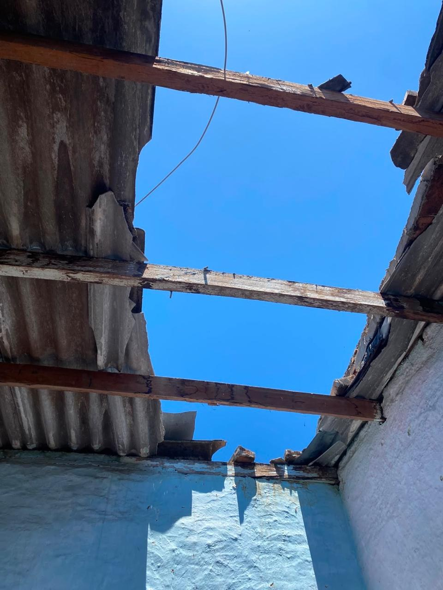
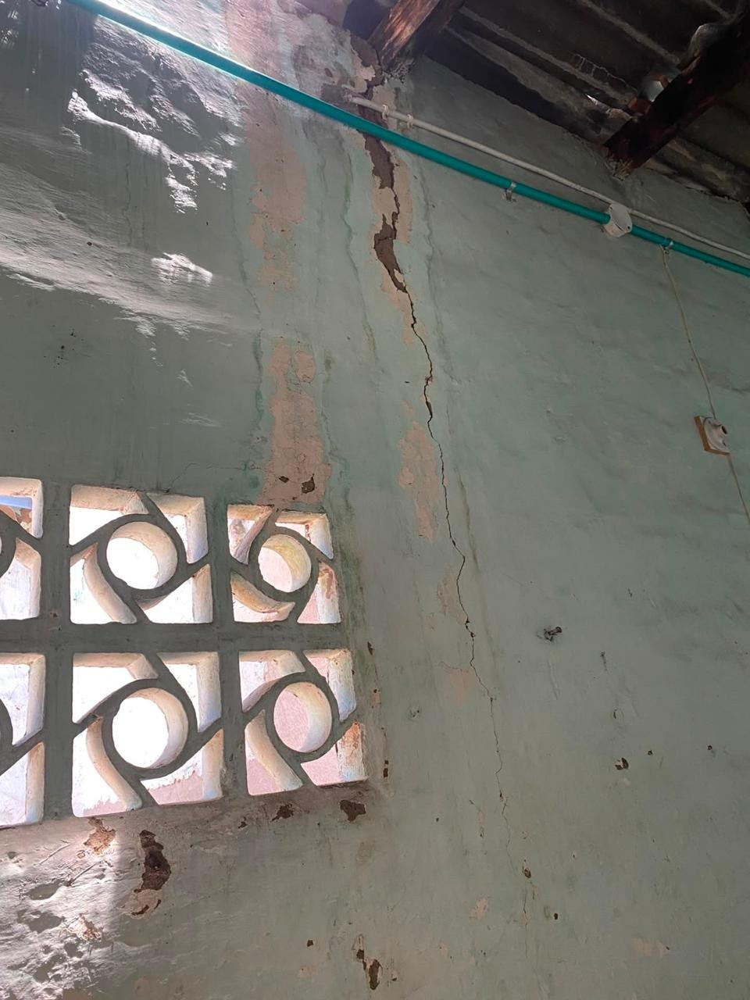
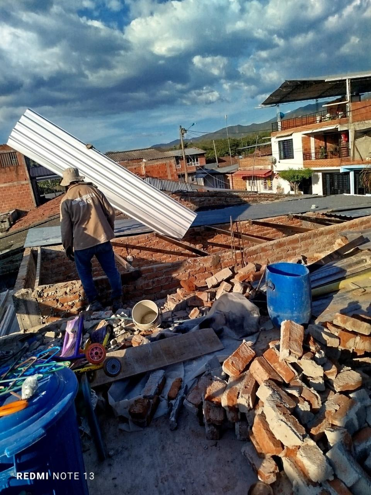
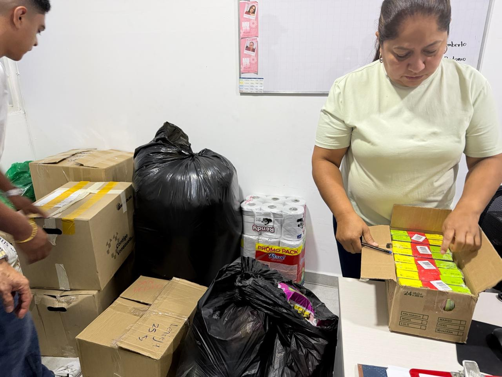

Una cifra no cuenta toda la historia
La información del RUFE es operativa y debe leerse junto con validaciones de campo, soportes y decisiones institucionales.
Cómo se construye el dato →Consulta el corte consolidado del RUFE, el estado territorial, las cifras principales y los documentos publicados para seguimiento ciudadano e institucional.
Importante: las categorías de vivienda son marcas del censo y no equivalen por sí solas a un dictamen estructural.
Enlaces publicados por administradores del portal. Solo se muestran publicaciones activas.
Elige una ruta. Cada módulo explica primero lo esencial y después permite profundizar.
Busca tu barrio, vereda o territorio y consulta sus cifras.
Abrir mapa → 02⌂Entiende qué significan habitable, averiada, no habitable y destruida.
Ver clasificación → 03◎Conoce la caracterización por edad, sexo y ubicación declarada.
Ver población → 04↻Revisa cada corte y los cambios publicados por la Alcaldía.
Ver actualizaciones → 05▤Consulta el documento fuente, anexos, fotografías e infografías.
Ir a documentos → 06§Conoce qué respalda el informe y qué no puede concluirse aún.
Consultar fuentes →
El censo consolida los núcleos familiares que cuentan con al menos una persona identificada.
Explorar este dato →Estas cifras corresponden al último corte público disponible y se actualizan con cada publicación validada.
La información del RUFE es operativa y debe leerse junto con validaciones de campo, soportes y decisiones institucionales.
Cómo se construye el dato →El portal conecta territorio, vivienda, población, calidad, documentos y versiones para que la información pública tenga contexto y trazabilidad.
Selecciona una localización y todo el panel se segmentará sobre ese territorio.
| Territorio | Familias | Personas | No hab. | Destr. | Sin estado* | Núcleos vacíos | Prioridad |
|---|
* En la tabla territorial del informe, “sin estado” incluye núcleos vacíos; la ficha diferencia ambos valores para análisis.
Las categorías son marcas censales. Se muestran sobre una base común de familias y pueden existir marcas múltiples.
Cada barra usa el mismo denominador para facilitar la lectura. Las categorías no son totalmente excluyentes.
90 no habitables + 2 destruidas
Universo inicial para verificación prioritaria. No constituye dictamen estructural definitivo.La marca censal indica que el inmueble fue reportado como habitable. No reemplaza la valoración técnica cuando existan daños.
Requiere descripción del daño, evidencia y definición de si amerita inspección especializada o medida preventiva.
Demanda verificación prioritaria, medidas de seguridad, alojamiento y articulación sectorial cuando corresponda.




La caracterización permite orientar asistencia, visitas y decisiones según edad, ubicación y condiciones del hogar.
La priorización no debe basarse únicamente en el orden de llegada al censo: debe considerar riesgo para la vida, población diferencial, exposición y red de apoyo.
Las brechas se convierten en tareas concretas de revisión antes de cualquier cierre o publicación oficial.
Cada publicación queda preservada como una versión trazable. El histórico crece automáticamente con nuevos cortes publicados.
El informe distingue captura, control de calidad, depuración, validación institucional y consolidación oficial.
Consulta el informe fuente, piezas visuales y archivos publicados en cada corte.
Cada publicación incorpora fecha, versión, nota de cambio y referencia al corte que reemplaza.
Consulta el fundamento normativo, el alcance RUFE/RUD, las conclusiones y el control documental del corte.
El portal público se alimenta desde un flujo controlado: editar, revisar, aprobar y publicar.